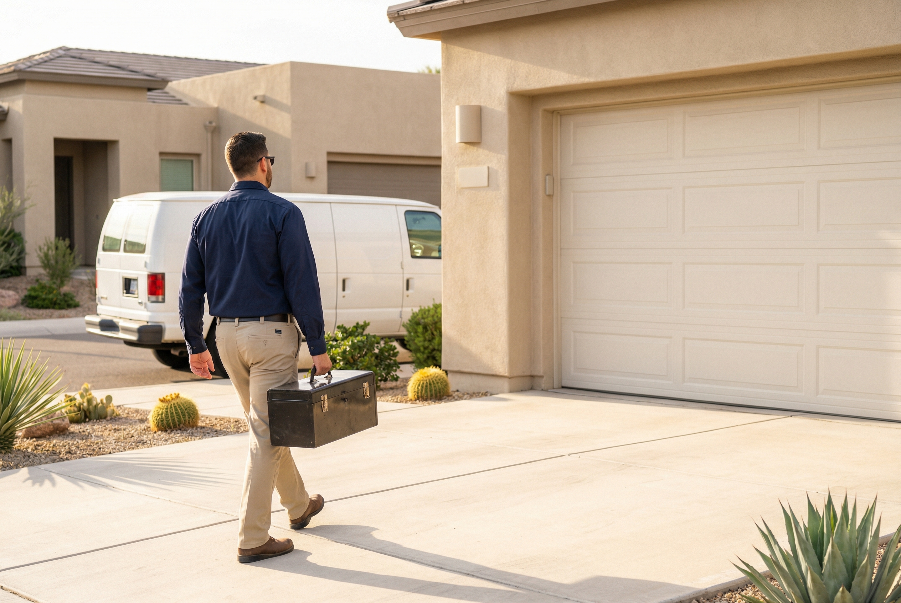
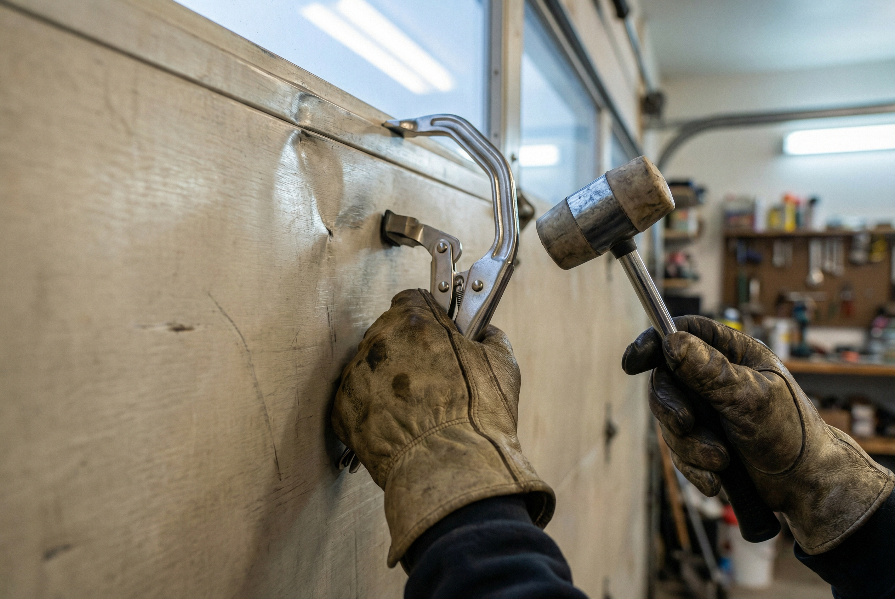
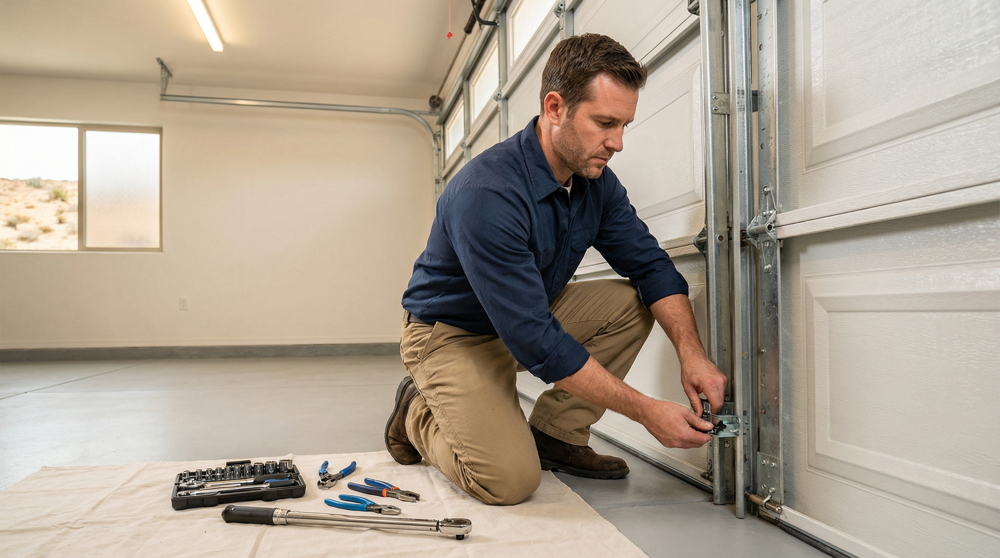

A garage door is the largest moving part of your home — and when something goes wrong, it affects your daily routine, your home security, and your family's safety. Whether your door is stuck halfway, making grinding noises, or refusing to respond to the remote, the problem rarely fixes itself. It gets worse. And waiting typically turns a minor repair into a major one.
At Gilbert Garage Door Pro, we repair every component of residential garage door systems: panels, tracks, cables, rollers, hinges, weatherstripping, bottom seals, and hardware. We work on all major brands and all door types — sectional, roll-up, and carriage-style. Our technicians arrive with fully stocked trucks so most repairs are completed in a single visit, the same day you call.
If you need garage door repair in Gilbert or anywhere in the East Valley, call us at (623) 624-9207 for a free estimate. We'll tell you what's wrong, what it costs, and how long it will take — before we start any work.

Garage doors fail in predictable ways. The mechanical components wear out from repeated use, the Arizona heat accelerates deterioration, and small issues compound when left unaddressed. Here are the most common garage door repairs we perform in Gilbert.
A backed-into panel, storm damage, or years of sun exposure can leave garage door panels cracked, warped, or dented. In many cases individual panels can be replaced without swapping the entire door — saving you significant cost. We source matching panels from all major manufacturers including Clopay, Amarr, and Wayne Dalton. If the damage is too extensive for a panel swap, we can discuss full garage door replacement options.
A door that has jumped its tracks is one of the most common emergency repair calls we receive. This happens when a cable snaps, a roller breaks, or the door is hit while in motion. An off-track door should never be forced — the panels can buckle, the tracks can bend further, and the door can fall unpredictably. We realign the door, replace damaged rollers or cables, and verify the tracks are straight and properly secured before testing.
Rollers and hinges are the moving parts that guide your door along the tracks. Over time, nylon rollers crack, steel rollers wear flat spots, and hinge pins develop play. The result is a door that grinds, shakes, or binds during operation. We replace worn rollers with high-quality nylon rollers that are quieter and longer-lasting than the original steel units most builders install. According to the Door & Access Systems Manufacturers Association (DASMA), routine roller and hinge maintenance is one of the most effective ways to extend the life of your entire door system.
Lift cables connect the bottom of your door to the spring system's cable drums. They bear the full weight of the door every time it opens. When cables fray, they can snap without warning — and a door in free-fall is dangerous. If you notice your cables are starting to unravel or you see loose strands, that's a repair to schedule immediately, not next month. We replace cables in matched pairs with aircraft-grade galvanized steel cable rated for your door's weight.
The vertical and horizontal tracks your door rides in must be precisely aligned. Even a small bend or gap can cause the door to bind, operate unevenly, or come off the track entirely. We straighten minor bends on-site and replace sections that are too damaged to salvage. Every track repair includes a full alignment check with a level to ensure smooth, balanced operation from floor to ceiling.
The rubber seal along the bottom of your door and the weatherstripping around the frame keep out dust, pests, rain, and the intense Arizona heat. Gilbert's summer temperatures routinely exceed 115°F, and a degraded seal lets that heat pour into your garage — raising cooling costs and damaging anything stored inside. We replace bottom seals and side weatherstripping with UV-resistant materials rated for desert conditions.
Gilbert sits in the heart of the Sonoran Desert, and the climate puts unique stress on garage door systems that homeowners in milder regions never experience. Understanding these factors helps explain why your door may need repair sooner than you'd expect.
Interior garage temperatures in Gilbert can exceed 130°F during summer. Metal components — springs, tracks, hinges, and hardware — expand in the heat and contract overnight as temperatures drop 30–40 degrees. This daily thermal cycling accelerates metal fatigue across every component of the door system. Springs lose their temper faster, tracks warp subtly over time, and hardware loosens as fasteners repeatedly expand and contract.
Gilbert averages over 300 days of sunshine per year. South- and west-facing garage doors absorb enormous amounts of UV radiation. Over time, UV degrades paint finishes, causes composite panels to become brittle, and breaks down the rubber in weatherstripping and bottom seals. If your door faces west, it's receiving the most intense afternoon sun exposure possible — and it will show signs of UV damage years before an east-facing door on the same street.
Desert dust, monsoon debris, and fine sand particles infiltrate tracks, coat rollers, and grind against moving parts. Without regular cleaning and lubrication, this abrasive material accelerates wear on rollers, hinges, and the tracks themselves. A door that was quiet and smooth when new can develop grinding noises and rough operation within a few years if maintenance is neglected in Arizona conditions.
These aren't hypothetical scenarios — they're the repair calls we handle every week. If your Gilbert home's garage door is showing any signs of wear, addressing it now prevents a more expensive repair later. Call us at (623) 624-9207 for a free inspection.

Not every problem calls for a full door replacement. Many issues — a broken cable, a worn set of rollers, a single dented panel — are straightforward repairs that cost a fraction of a new door. But there are situations where replacement is the smarter investment.
Our technicians will give you an honest assessment. If a repair gets you another 5–10 years of reliable service, we'll recommend the repair. If the math points toward replacement, we'll walk you through your installation options and help you choose a door that fits your home and budget. Either way, you'll have the information you need to make the right call. For detailed pricing on common repairs, see our cost guide.

Most garage door repairs can't wait. When you call, we schedule you for the same day whenever possible. Our technicians service Gilbert and the surrounding East Valley communities daily, so response times are fast. If your door is stuck open or poses a security risk, let us know — we'll prioritize your call.
Before touching a tool, our technician inspects the entire door system — not just the part that's obviously broken. We check the springs, opener, cables, rollers, tracks, safety sensors, and hardware. This comprehensive approach catches secondary issues that could cause another failure if left unaddressed.
You'll receive a complete quote before any work begins. Parts, labor, and any additional recommendations are broken out clearly. There are no hidden fees, no surprise charges, and no pressure to approve work you don't want. We believe in transparency — it's why our customers call us back and refer their neighbors.
Our trucks carry the parts needed for the vast majority of residential garage door repairs: rollers, cables, hinges, bottom seals, weatherstripping, springs, and common panel sizes. Most repairs are completed in a single visit — no waiting for parts to be ordered and no scheduling a second trip.
Every repair concludes with a full operational test. We cycle the door multiple times, verify the auto-reverse function on the opener, test the safety sensors, and confirm balanced operation. We don't leave until we're confident the door is operating safely and smoothly. This final verification is required by CPSC garage door safety standards and it's a step we never skip.
We stand behind every repair. If something we fixed fails or doesn't perform as expected, call us and we'll make it right. Our business depends on the Gilbert community trusting us with their homes, and we earn that trust one repair at a time.
Gilbert Garage Door Pro provides garage door repair throughout Gilbert and the wider East Valley. Whether you're in Agritopia with a door that won't close or in Power Ranch with a panel that took a hit from a basketball, our technicians are nearby and ready to help the same day you call.

Most garage door repairs in Gilbert range from $85 to $350 depending on the issue. Simple fixes like roller replacement or track realignment are on the lower end, while cable replacement, panel swaps, or multi-component repairs cost more. We provide an exact, itemized quote before starting work — no surprises. For a detailed breakdown, see our garage door repair cost guide.
If the issue is isolated to one or two components — a broken cable, worn rollers, or a single damaged panel — repair is almost always the better option. If multiple panels are damaged, the door has structural issues, or you're facing recurring repairs on an aging door, replacement may be more cost-effective. Our technician will assess both options and give you an honest recommendation. We offer both repair and full installation services.
Yes, in most cases. We offer same-day garage door repair appointments throughout Gilbert and the East Valley. Our service trucks are stocked with the parts needed for the most common repairs, so there's usually no waiting for parts. For urgent situations — like a door stuck open or a security concern — we prioritize your call. For true after-hours emergencies, see our 24/7 emergency repair service.
We service all major garage door brands including Clopay, Amarr, Wayne Dalton, CHI, Raynor, Martin Door, and Northwest Door. We also repair all major opener brands: LiftMaster, Chamberlain, Genie, Craftsman, and Linear. If you're not sure what brand you have, no problem — our technicians can identify it on-site and source the correct parts.
It depends on the noise. A mild squeak or hum may indicate rollers or hinges that need lubrication — a simple fix. Grinding, popping, or scraping noises are more serious and can indicate worn rollers, bent tracks, or failing springs. If your door makes a sudden loud bang, stop using it immediately — that's often a spring breaking under tension. When in doubt, call us for a diagnostic inspection before continuing to operate the door.
Same-day service, upfront pricing, all brands serviced. Call us now at (623) 624-9207 or fill out the form above for a free estimate.
Call (623) 624-9207Brands We Service